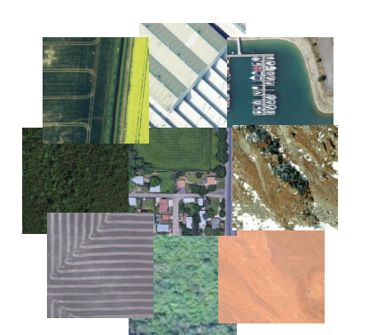

Nature or Not? : Detection of Man-Made Structure from Satellite Imagery
After reading about the U.S. discovery of the installation of nuclear-armed Soviet missiles in Cuba via aerial photographs back in 1962 and also the use of aerial images to discern damage done by bombs, as well as designating targets, during World War II, I became interested in the many uses of aerial or satellite images. It required a lot of man-power to review all of the aerial photographs taken for these tasks in the past. Today, we have even more images, acquired by satellites. Many sets of eyes are needed to view of all of this data. An automated method to do so would help speed up the process and lead to less error introduced from the weary human viewers.
My project entails training a Convolutional Neural Network to discern between natural & and man-made structures in satellite images from around the globe. The neural network should be able to learn that hard fixed lines and shapes, discerned from greater pixel differentiation are more likely to be man-made objects, whereas images with less pixel differentiation, softer edges, are more likely to be from a natural setting. Also, brighter colors, along with the pixel differences, are more likely to come from man-made objects.
The images in my training and test sets come from around the world and contain a variety of natural settings, including forests, rivers, mountains, deserts, beaches, and ice and snow. The man-made settings are also from areas from all over the world.
I've gleaned 10,000 images from Googlemaps, using a simple screen capture from my laptop to save the images. I was unable to use webscraping to grab the images, since Googlemaps is an app and not a regular webpage. Googlemaps, and each of its data providers, will be acknowledged in my presentation. Each color image is 250x250x3 pixels. I'm labeling these images by hand as 0 for natural and 1 for images containing man-made objects. I'm including plowed fields as man-made objects, as the shapes rendered by the plow are more closely related to other man-made objects than to that of nature. And technically, these shapes, and the plowed fields, are man-made.

My next steps are to build an initial Convolutional Neural Network and try to pass a small portion of my data through it to make sure I can get it up and running. If my data size appears to be too large, I'll cut my images down to a smaller size and try again. Once I get my CNN running, I'll optimize it for my data and check the F1-score, Accuracy, Precision, and Recall. I'll also review my ROC curve and AUC for each model derived. If I'm running into problems with the model categorizing data incorrectly, I may try to remove images that are more ambiguous from the dataset to provide more explicit examples for the NN to learn from.
I'll be using a presentation to show my work, showing a variety of the images used in the training of the model, along with a short description of how the CNN works, and with a follow up of how this technology can be used in the future, in reconnaisance, in natural disaster rescue operations, in ecological preservation of rain forest areas, ...and even in evaluating if there's intelligent life on distant planets...as long as we can get the pictures!